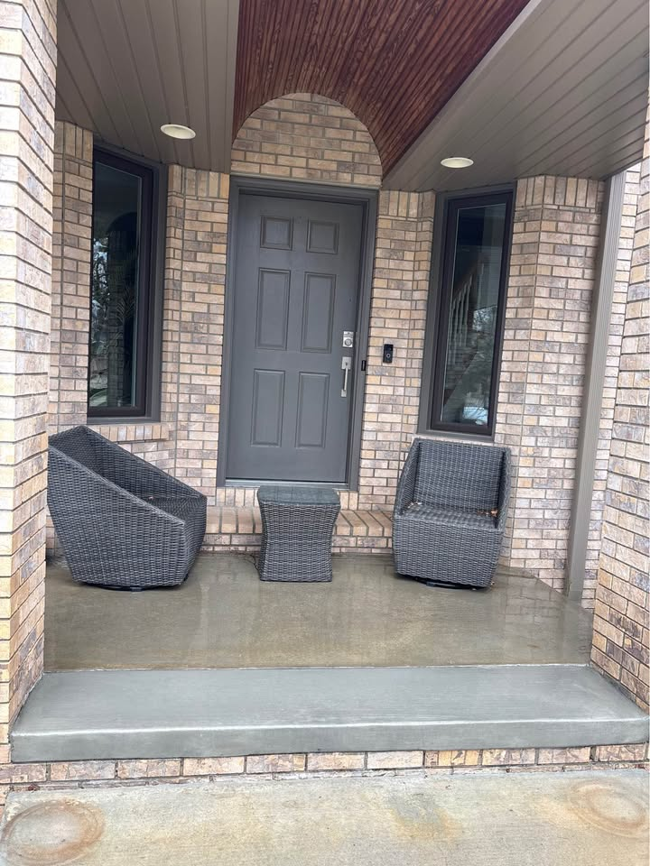

Concrete Repair
Review repair questions if the slab has cracks or wear before coating.
Garage floor coatings can improve appearance, cleanup, and surface protection. Many homeowners compare epoxy, polyaspartic, and flake-system options, but prep and existing slab condition still matter most. Call, text, or request a quote from the homepage.

A garage floor can look great at first and still fail early if moisture, cracks, or weak prep are ignored. It helps to compare how the surface will be cleaned, repaired, and prepped before any coating goes down, whether the finish is epoxy, polyaspartic, or a decorative flake system.
Garage floor coatings appeal to homeowners who want cleaner-looking utility space, easier maintenance, or a more finished garage surface. Epoxy floors, polyaspartic coatings, and flake systems are all common options, and comparing prep and finish details can make those quotes easier to evaluate.
Review repair questions if the slab has cracks or wear before coating.
Compare new slab planning for garages, sheds, and utility spaces.
Explore other appearance-focused concrete surface options.